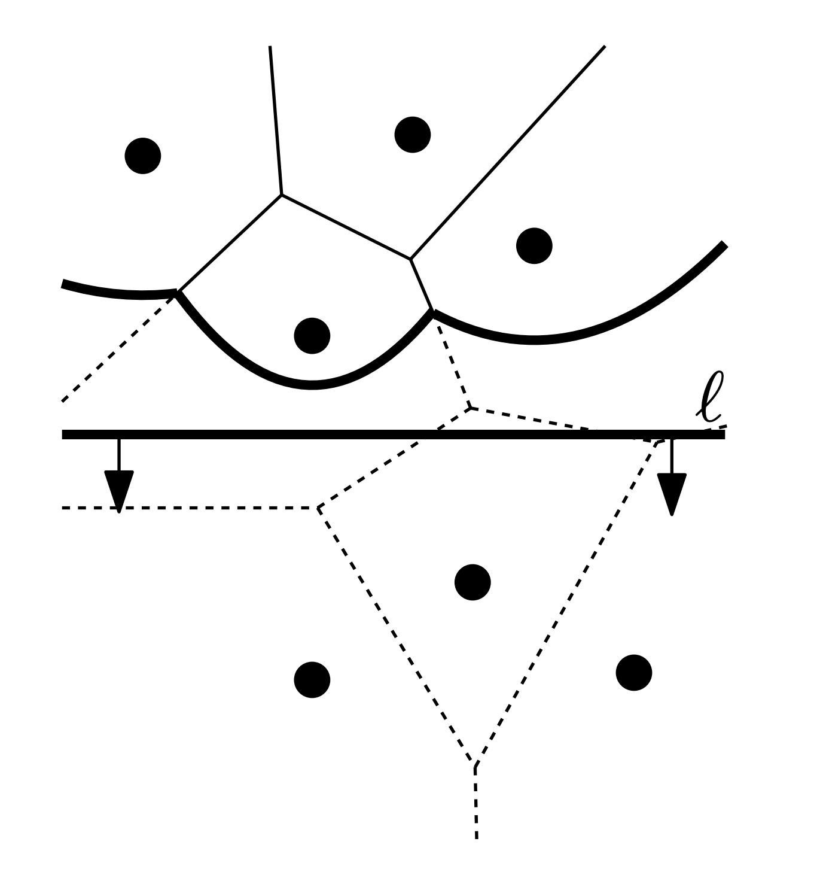
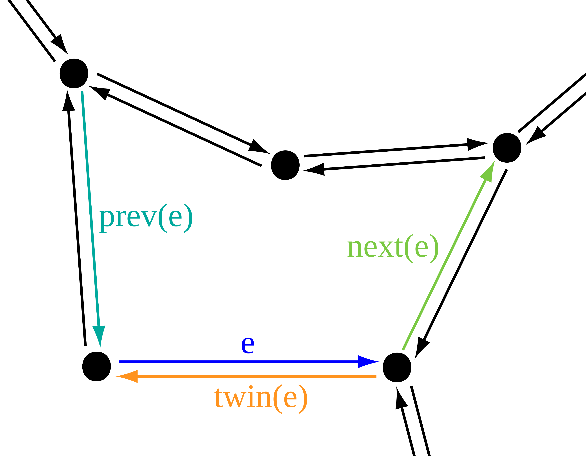
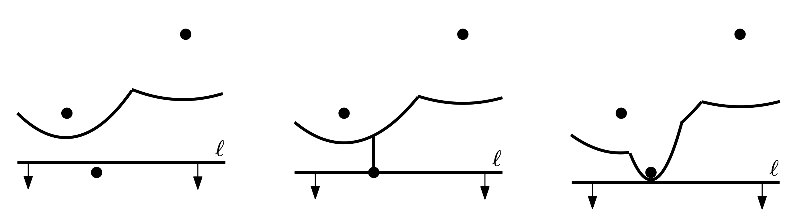
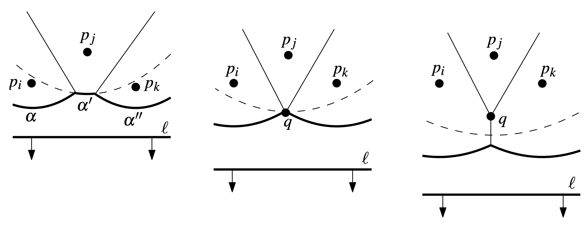
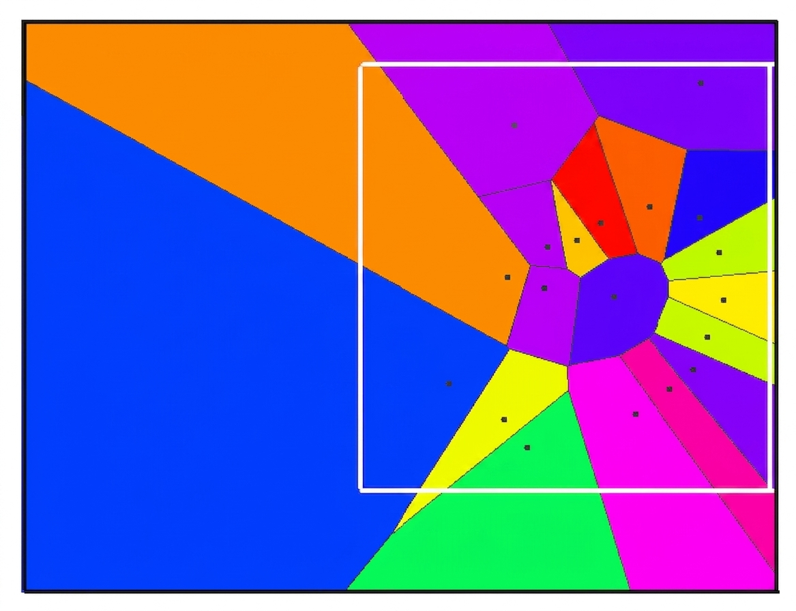

Introduction
I wrote Foronoi while taking a computational geometry course. The textbook description of Fortune's sweep-line algorithm is elegant and compact, fitting neatly into a few pages of pseudo-code. But as any developer knows, the distance between "mathematically proven" and "production-ready" is measured in edge cases.
Translating each line of the book revealed dozens of hidden engineering tasks. This post explains the small algorithms and data structures that make the implementation robust. We'll also see why Fortune's algorithm is optimal—since the problem of sorting $n$ real numbers can be reduced to computing a Voronoi diagram, we know the $\Omega(n \log n)$ lower bound is the best we can hope for.
The Algorithm in One Picture
The goal is simple: given a set of site points, produce a Voronoi diagram partitioning the plane so every region contains the points closest to one site.

The beachline consists of parabolic arcs. The intersections between these arcs, known as breakpoints, trace out the Voronoi edges as the sweep-line moves downwards.
Fortune's sweep-line algorithm works by moving a horizontal line from top to bottom. As it moves, it maintains the beachline.
Why the Beachline?
We can't just sweep the Voronoi edges because they depend on sites the line hasn't seen yet. However, for any point $q$ above the sweep-line $L$, we know its nearest site cannot be below $L$ if $q$ is closer to a site we've already seen than it is to the sweep-line itself. This "safety boundary" is defined by a parabola for each site, and their lower envelope forms the beachline.
Two event types drive the algorithm:
- SiteEvent: A new site reaches the sweep line, triggering the insertion of a new arc.
- CircleEvent: Three consecutive arcs converge, causing an arc to disappear and producing a Voronoi vertex.
event The Core Event Loop
The main loop orchestrates the entire sweep. It processes events from a priority queue (ordered by y-coordinate) until it's empty, delegating to specific handlers for site and circle events.
def create_diagram(self, points):
self.initialize(points)
while not self.event_queue.empty():
event = self.event_queue.get()
self.sweep_line = event.yd
if isinstance(event, CircleEvent) and event.is_valid:
self.handle_circle_event(event)
elif isinstance(event, SiteEvent):
self.handle_site_event(event)
self.notify_observers(Message.STEP_FINISHED)
self.bounding_poly.finish_edges(self.edges, self._vertices)The Beachline & Status Tree
In Fortune's algorithm, the sweep-line does not just need a generic ordered container. It needs a status structure that represents the current beachline as a sequence of arcs and breakpoints. That structure has to be dynamic, ordered by x-position, and able to update locally when a site event splits an arc or when a circle event removes one.
The beachline is the heart of the algorithm. In code, it’s implemented as a self-balancing binary search tree (custom implementation) where leaves are arcs and internal nodes represent moving breakpoints. This structure is critical for performance, ensuring the beachline (which consists of at most $2n-1$ arcs) supports $O(\log n)$ operations. Importantly, while each arc is defined by one site, one site can contribute multiple arcs to the beachline.
Internal nodes (breakpoints) store ordered tuples of sites $\langle p_i, p_j \rangle$ and maintain a pointer to the half-edge they are currently tracing in the DCEL.
This is why the tree in the project is a custom implementation rather than a plain Python list or a stock library container. A simple list would be easy to search, but it would not support the local tree edits that the algorithm requires. A generic tree from a library would also not expose the exact operations the algorithm relies on, such as parent links, rotations, height tracking, predecessor and successor lookup, and leaf replacement.
The implementation adds a few operations that are not needed by an ordinary BST used only for storage. First, it can find the leaf corresponding to the arc above a given x-coordinate, which is how a new site locates the correct place in the beachline. Second, it can replace a leaf with a whole subtree when a new site splits an existing arc into two breakpoints and a new middle arc. Third, it supports deletion and rebalancing when a circle event removes an arc, and it can walk to neighboring arcs so the algorithm can detect new circle events. These operations are what make the structure a true status tree for Fortune's algorithm rather than just a generic balanced search tree.
def find_leaf_node(root, key, **kwargs):
node = root
while node is not None:
if node.is_leaf():
return node
if key == node.get_key(**kwargs) and not node.is_leaf():
return node.left.maximum() if node.left is not None else node.right.minimum()
node = node.left if key < node.get_key(**kwargs) else node.right
return nodeself.status_tree = arc_node_above_point.replace_leaf(replacement=root, root=self.status_tree)
self.status_tree = Tree.balance_and_propagate(root)Edge Construction and DCEL
Every breakpoint between two arcs traces a Voronoi edge as the sweep progresses. When two breakpoints meet at a circle event, a Voronoi vertex is created. To represent the resulting diagram, Foronoi uses a Doubly Connected Edge List (DCEL) (or half-edge) structure.

The DCEL structure: each edge is composed of two "half-edges" pointing in opposite directions, linking vertices and faces into a searchable graph.
This allows the resulting graph to be traversed efficiently, clipped to bounding boxes, and exported for visualization. Each edge knows its "twin," its origin vertex, and its neighboring faces.
Diving into the Implementation
Translating geometric theory into Python requires mapping abstract steps to concrete data structures. The implementation follows the descriptions in "Computational Geometry: Algorithms and Applications" by de Berg et al.
Handling Site Events

When the sweep-line hits a new site, a new parabolic arc appears on the beachline, initially splitting an existing arc into two pieces.
When a site event occurs, the sweep-line has reached a new point. This triggers the insertion of a new parabolic arc into the beachline. This is the only way a new arc can appear.
First, we locate the existing arc α vertically above the new site. The $x$-coordinate of the breakpoints in our tree is calculated on-the-fly using the sites and the current sweep-line position. Any pending circle events for this arc are now "false alarms" and must be invalidated.
def handle_site_event(self, event):
point_i = event.point
new_arc = Arc(origin=point_i)
# 1. Search beachline for arc above point
arc_node = Tree.find_leaf_node(self.status_tree, key=point_i.xd)
arc_above = arc_node.get_value()
# 2. Remove false alarm circle event
if arc_above.circle_event:
arc_above.circle_event.remove()The existing arc is then split into three. We replace the single leaf in our tree with a new subtree representing the sequence (pj, pi, pj), where pi is our new site.
# 3. Replace leaf with new subtree
# (p_j) -> (p_j, p_i, p_j)
root = self.create_subtree(arc_above, new_arc)
self.status_tree = arc_node.replace_leaf(root)Finally, we initialize the new Voronoi edges. At a site event, two new breakpoints are created. They initially coincide at the new site's location and move in opposite directions to trace out the same Voronoi edge separating the new site from the existing one.
# 4. Create new half-edges
self.create_half_edges(arc_above, new_arc)
# 5. Check for new circle events
self._check_circles(neighbors)Handling Circle Events

When two breakpoints converge, the arc between them disappears. This occurs during a Circle Event, triggered when the sweep-line reaches the bottom of a circle passing through three sites.
A Circle Event represents the convergence of two breakpoints. Geometrically, this happens at the center of the circumcircle defined by three sites. As the sweep-line moves, the middle arc between these sites shrinks until it vanishes. The event is called a "circle event" because the three involved sites lie on a unique circle whose lowest point is exactly where the sweep-line is when the event fires, and the circle's center becomes a Voronoi vertex.
Circle events represent the moment an arc disappears from the beachline. This happens when three sites' boundaries converge at a single point—a Voronoi vertex. Every Voronoi vertex is guaranteed to be detected this way.
When this happens, we remove the disappearing arc from the beachline and record the new vertex at the center of the circle defined by the three involved sites.
def handle_circle_event(self, event):
# 1. Delete disappearing arc leaf
arc_node = event.arc_pointer
self.status_tree = self.remove_arc(arc_node)
# 2. Create Voronoi vertex
v = Vertex(event.center.x, event.center.y)
self._vertices.add(v)The two half-edges that were being traced by the arc's breakpoints are "closed" at this new vertex. Simultaneously, a new half-edge begins, moving away from this vertex as the remaining two sites now share a boundary.
# 3. Connect edges to vertex
event.edge_left.origin = v
event.edge_right.origin = v
# Create new edge for the new breakpoint
new_edge = HalfEdge(origin=v)
self.edges.append(new_edge)
# 4. Check for new convergence
self._check_circles(new_neighbors)Supporting Utilities
Beyond the core sweep, several specialized utilities handle the geometric heavy lifting:
Shoelace — Polygon Area
Implemented using NumPy for efficient vector operations on the resulting cell vertices.
def _shoelace(x, y):
return 0.5 * np.abs(np.dot(x, np.roll(y, 1)) - np.dot(y, np.roll(x, 1)))Numerical Predicates
Robust checks for line intersections and clockwise orientation to avoid topological errors.
@staticmethod
def check_clockwise(a, b, c, center):
angle_1 = Algebra.calculate_angle(a, center)
angle_2 = Algebra.calculate_angle(b, center)
angle_3 = Algebra.calculate_angle(c, center)
# Ensure sites are oriented correctly around the circle center
counter_clockwise = (angle_3 - angle_1) % 360 > (angle_3 - angle_2) % 360
return not counter_clockwisearchitecture Algebra Utilities Explained
- Distance / magnitude / norm: Helpers for Euclidean distance and vector normalization used for clipping and comparisons.
- Line-ray intersection:
line_ray_intersection_pointcomputes intersections using robust vector math, checking for parallelism to avoid division by zero. - get_intersection: Wrapper that converts results to
Coordinateobjects, used when clipping half-edges to the bounding polygon. - Angle and clockwise tests: Used when validating candidate circle events to ensure sites are oriented correctly around the circle center.
Lazy Invalidation of Circle Events
While all site events are known before the sweep begins, circle events are dynamic. They are created and destroyed as the beachline's topological structure evolves. This brings us to a critical challenge: detecting valid circle events and handling "false alarms."
A circle event is defined by three consecutive arcs on the beachline. At every event, the algorithm checks new triples that appear. However, not every triple results in an event:
- Convergence: Breakpoints must move towards each other. If they diverge, no circle event will ever occur.
- False Alarms: Even if breakpoints converge, the triple might disappear (e.g., a new site splits one of the arcs) before the sweep-line reaches the convergence point.
Instead of costly removals from the priority queue, Foronoi uses lazy invalidation. When a triple disappears, its associated event is simply marked as invalid.
class CircleEvent(Event):
def __init__(self, **kwargs):
super().__init__(**kwargs)
self.is_valid = True
def remove(self):
# Mark this circle event as a false alarm
self.is_valid = False
return self
When the event loop encounters a circle event, it first checks event.is_valid. If it's a false alarm, it's discarded, and the sweep continues. This is made efficient by storing pointers from the beachline leaves (arcs) directly to their potential circle events in the queue.
Closing the Loop: Bounding and Finishing
Voronoi edges are conceptually infinite. For any practical application, we need to clip these edges to a finite region. The package goes beyond the usual rectangular bounding box by supporting arbitrary polygon clipping, so you can clip against triangles, country-like outlines, or any other simple polygon you provide.

Infinite edges are intersected with the bounding polygon, and new vertices are injected to close the Voronoi cells.
Bounding shapes & clipping
The key idea is to treat the clipping region as an ordered ring of vertices and then trim each Voronoi edge to the part that lies inside that region. This is done in two stages. First, the code checks whether a point or a candidate endpoint lies inside the polygon using a classic ray-casting test: a ray is traced from the point to infinity, and the number of times it crosses the polygon boundary is counted.
def inside(self, point):
vertices = self.points + self.points[0:1]
x = point.xd
y = point.yd
inside = False
for i in range(0, len(vertices) - 1):
j = i + 1
xi = vertices[i].xd
yi = vertices[i].yd
xj = vertices[j].xd
yj = vertices[j].yd
intersect = ((yi > y) != (yj > y)) and (
x < (xj - xi) * (y - yi) / (yj - yi) + xi
)
if intersect:
inside = not inside
return insideSecond, the implementation needs the exact point where a Voronoi edge crosses a polygon edge. That is done with a ray-line segment intersection test in the algebra helpers. The routine constructs a ray from the edge endpoint, forms a perpendicular direction vector, and solves for the parameter where the ray meets the segment. If that intersection lies on the segment and along the ray, it is accepted.
def line_ray_intersection_point(ray_orig, ray_end, point_1, point_2):
orig = np.array(ray_orig, dtype=float)
end = np.array(ray_end, dtype=float)
direction = np.array(Algebra.norm(end - orig), dtype=float)
point_1 = np.array(point_1, dtype=float)
point_2 = np.array(point_2, dtype=float)
v1 = orig - point_1
v2 = point_2 - point_1
v3 = np.array([-direction[1], direction[0]])
if np.dot(v2, v3) == 0:
return []
t1 = np.cross(v2, v1) / np.dot(v2, v3)
t2 = np.dot(v1, v3) / np.dot(v2, v3)
if t1 > 0.0 and 0.0 <= t2 <= 1.0:
return [orig + t1 * direction]
return []These two primitives are combined during clipping: if an edge is partially outside the polygon, the code finds the boundary intersection, creates a new vertex there, and keeps only the inside portion of the edge. That is what makes the package suitable for structured regions rather than just axis-aligned boxes.
Tricky Bits & Edge Cases
The real challenge lies in the edge cases. A naive implementation will often fail when sites are perfectly aligned or coincident. Foronoi handles these through careful tie-breaking and numerical cleanup.
Zero-Length Edges
When two site events occur at the exact same location (or very close), the algorithm can produce edges with zero length and duplicate vertices. This happens because the circle event math collapses down to a single point.
def clean_up_zero_length_edges(self):
resulting_edges = []
for edge in self.edges:
start, end = edge.origin, edge.twin.origin
if start.xd == end.xd and start.yd == end.yd:
# Combine vertices and move connected edges
v1, v2 = edge.origin, edge.twin.origin
for connected in v1.connected_edges:
connected.origin = v2
v2.connected_edges.append(connected)
self._vertices.remove(v1)
edge.delete()
else:
resulting_edges.append(edge)
self.edges = resulting_edgesOther handled scenarios include:
- Simultaneous Events: Tie-breaking for sites with the same y-coordinate using x-coordinates. If the first two sites are horizontal, special handling ensures the second site doesn't fail when searching for an arc above it.
- Collinear Sites: If three sites are collinear, they don't define a circle, so no circle event is generated.
- Site below Breakpoint: If a site is exactly below a breakpoint, the algorithm splits the breakpoint, effectively creating a zero-length arc that is immediately removed by a circle event.
- Near-Collinearity: Robust handling of sites that are almost on a straight line, which can lead to nearly-parallel beachline breakpoints.
Observers: Visualizing the Invisible
One of the biggest hurdles in implementing Fortune's algorithm is that the beachline and event queue are conceptual moving targets. To make debugging and learning easier, Foronoi implements a robust Observer Pattern.
The algorithm acts as a Subject, notifying attached observers whenever a significant event occurs. This decouples the core geometric logic from visualization code.
The TreeObserver
The TreeObserver renders the beachline status tree using GraphViz. It provides a visual representation of the BST's structure as arcs are inserted and removed, making it possible to see the tree rebalance in real-time.
foronoi/observers/tree_observer.py
The VoronoiObserver
Hooking into Matplotlib, the VoronoiObserver renders the spatial state of the construction. It captures intermediate steps, clipping stages, and the final diagram, allowing for the creation of animations like the one at the top of this post.
foronoi/observers/voronoi_observer.py
By simply attaching an observer, you can transform the abstract algorithm into an interactive educational tool:
v = Voronoi(polygon)
# Attach observers to peek into the internals
v.attach_observer(TreeObserver(callback=save_frame))
v.attach_observer(VoronoiObserver())
# The algorithm now notifies observers at every step
v.create_diagram(points)It’s an ideal tool for learning how sweep-line algorithms actually function under the hood, allowing developers to hook into the algorithm's lifecycle without modifying the core geometry logic.
Final Thoughts
Fortune’s algorithm is a masterpiece of efficiency, achieving $O(n \log n)$ time and $O(n)$ storage. It serves as a reminder that the best algorithms are often the ones that require the most care in implementation. Foronoi assembles the complex pieces—resilient event queues, beachline trees, and DCEL bookkeeping—into a readable, documented package that’s perfect for both production use and academic exploration.
You can check out the source code and examples on GitHub.